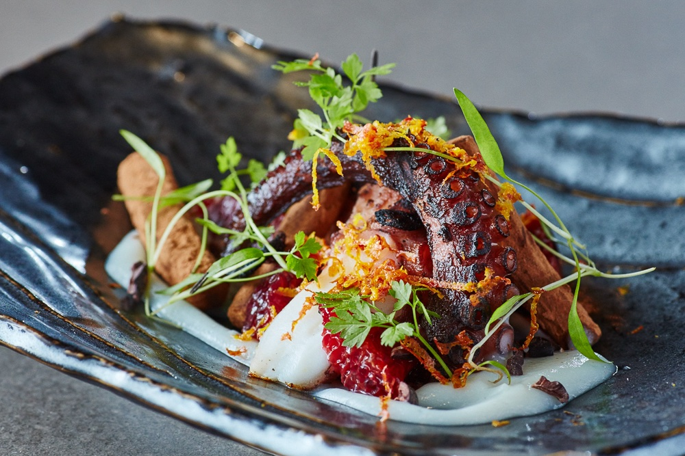
The Kitchen
New American, valley-grown
A menu that turns with the season and the morning's harvest.
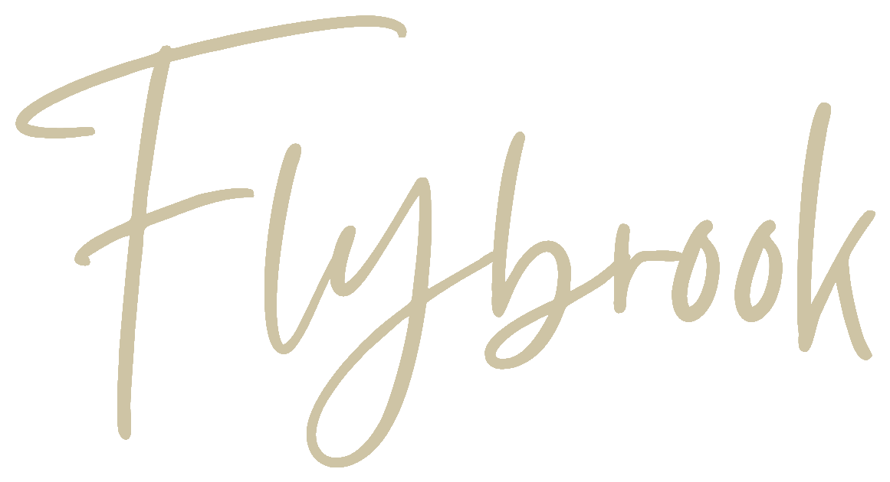

Inspired · Seasonal · Organic · Local · Fresh
A new American restaurant, bar and gathering place in the heart of Armonk, New York. Opening 2027.
Field and stream to fork
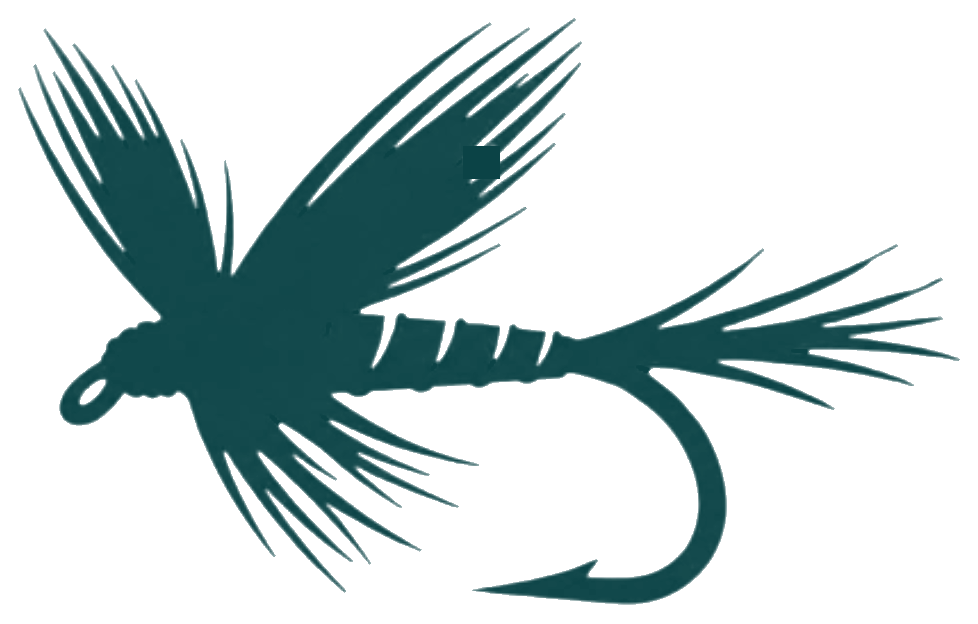
Executive Chef Roxanne Spruance serves lunch and dinner built around ingredients grown on our own land and across the valley — a seasonally distinguished table set in a calm, biophilic room.
Inside Flybrook

The Kitchen
A menu that turns with the season and the morning's harvest.
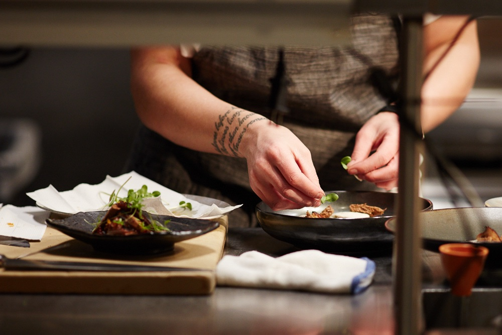
Our Farm
Grown in Livingston Manor, on the table by lunch in Armonk.
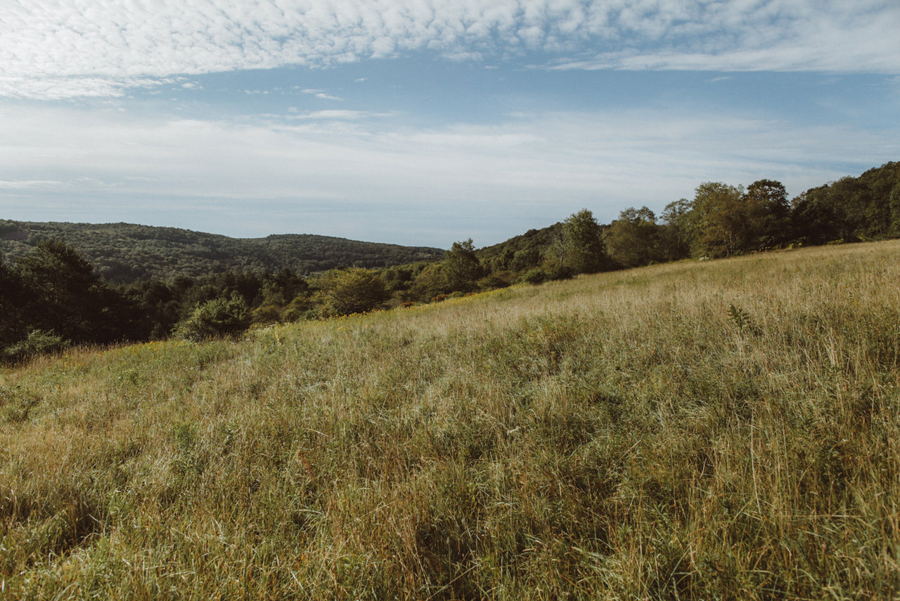
The Bar
A dynamic bar and social calendar at the center of downtown.
Livingston Manor
From May through October, our 117-acre regenerative organic farm at 26 Hoag Road grows the vegetables, herbs and eggs that shape each day's menu — picked at dawn and on the table in Armonk by lunch.
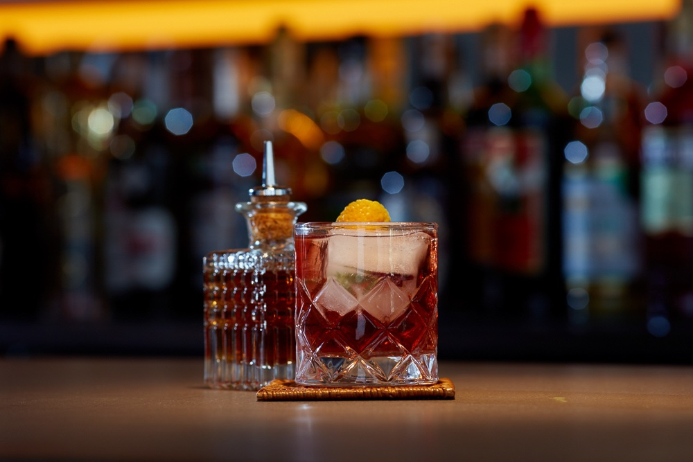
A lookbook
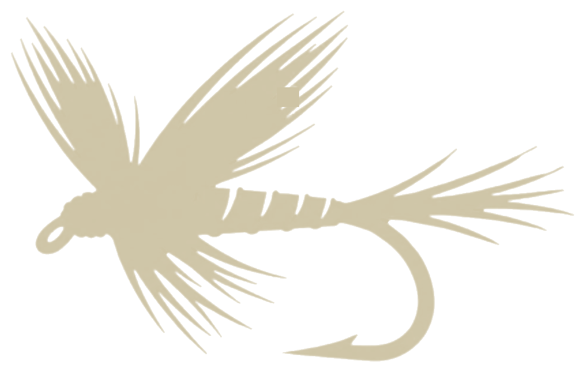
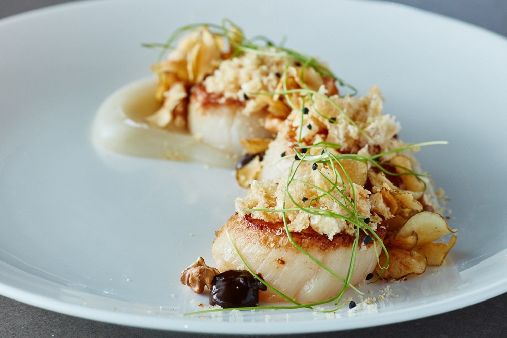
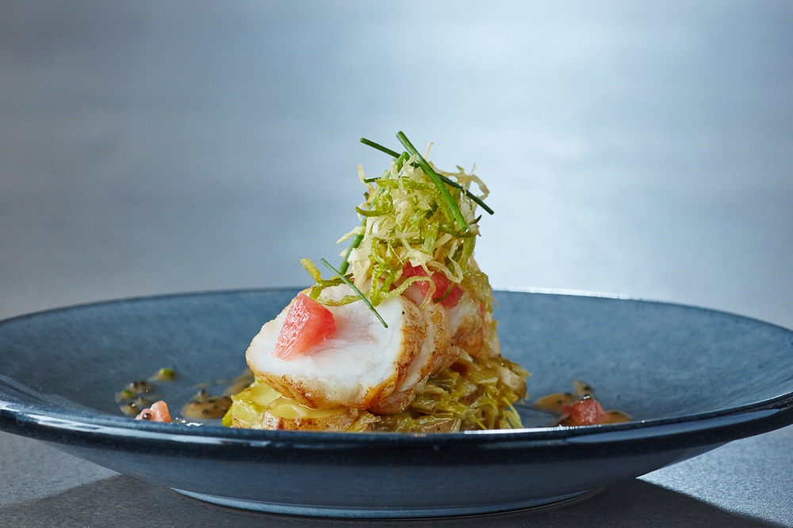
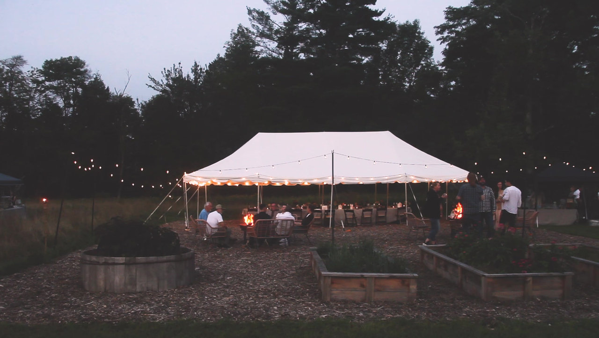
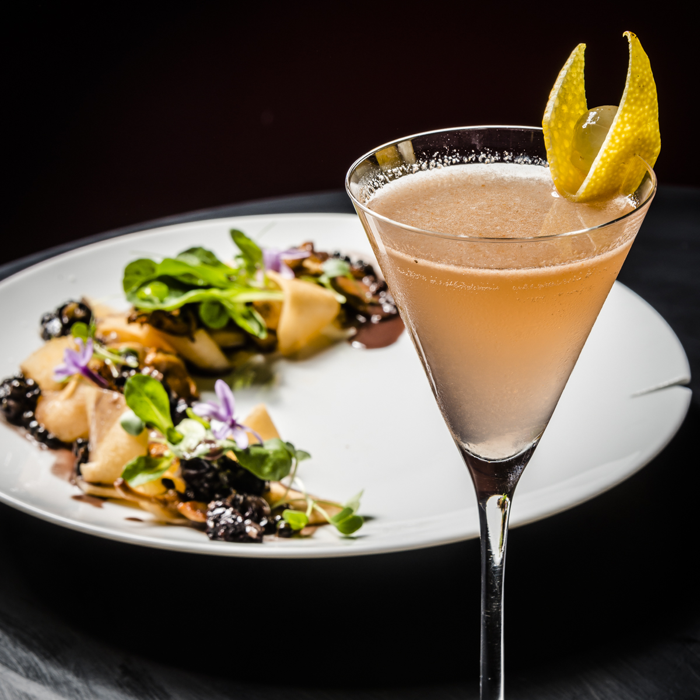
Opening 2027
Join the waitlist for opening news, farm dinners, and a few seats held back for neighbors.